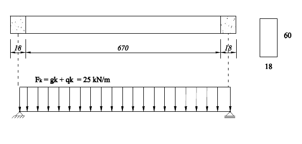
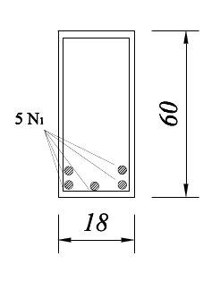
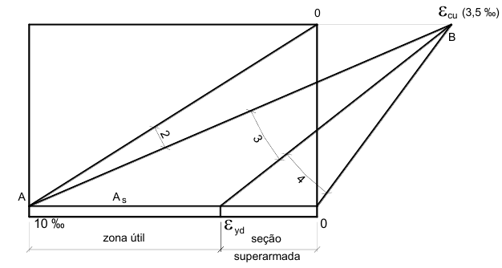

Viga retangular com armadura simples
Neste tópico será apresentado um exemplo completo de dimensionamento
Exemplo 2
Para a viga da figura seguinte, determinar a área de armadura longitudinal de flexão e as deformações na fibra de concreto mais comprimida e na armadura de flexão tracionada. São conhecidos:
$\gamma_c = \gamma_f$ = 1,4;
$\gamma_s$ = 1,15;
Concreto C30, aço CA-50;
$\phi_t$ = 6,3 mm;
Brita 1 ($d_{max} = $19 mm);
$c_{nom} = $ 2,0 cm;

Planta de formas do exemplo
Solução
Primeiramente deve-se definir um valor de altura útil com base nas dimensões da seção transversal da viga. Uma aproximação normalmente adotada e eonctrada subtraindo cerca de 6 cm d altura da viga
d = 60 - 6 = 54 (altura útil).
Comprimento efetivo:
$l_{ef} = l_0 +a_1 +a_2$
Sendo $l_0$ a distância livre entre faces dos apoios e $a_1$ e $a_2$ o menor valor entre metade da largura do apoio ou 30% da altura da viga.
Assim:
$a_1 = a_2 = $ 9 cm.
$l_{ef}$ = 670 + 9 + 9 = 688 cm.
Momento fletor máximo:
Por se tratar de viga biaopiada, o momento fletor máximo é dado por:
$M_k = \frac{F_k \cdot l^2}{8} = \frac{25 \cdot 6,88^2}{8}$ = 147,92 kNm = 1.4792 kNcm
$M_d = \gamma_f M_k$ = 1,4 x 1.4792 = 20.709 kNcm
Solução por meio de equações teóricas
$x_{2,lim} = 0,26 d$ = 14,04 cm
$x_{3,lim} = 0,63d$ = 34,02 cm
$M_d = 0,68 b_w x f_{cd} (d - 0,4 x) \rightarrow 20.709 = 0,68 \cdot 18 \cdot x \cdot (3,0/1,4) (54 - 0,4 x)$ $\rightarrow -10,49 x^2 +1.416,3 x -20.709 = 0$
Resolvendo a equação de segundo grau, o valor de $x$ é encontrado:
x = 16,7 cm (Domínio 3)
Raízes negativas são desprezadas.
$x/d = 16,7/54 = 0,31 (\le 0,45 \rightarrow Ok)$
A armadura de aço pode ser calculada como:
$A_s = \frac{M_d}{\sigma_{sd} (d - 0,4x)}$
Sendo $\sigma_{sd} = f_{yk}/\gamma_s$ em $kN/cm^2$
$A_s = \frac{20.709}{43,5 (54 - 0,4 \cdot 16,7)}$ = 10,06 $cm^2$
Solução por meio de tabelas
$K_c = \frac{b_w d^2}{M_d} = \frac{18 \cdot 54^2}{20.709} = 2,53$ $cm^2/kN$
Da Tabela A-1, página 74 da apostila "Flexão Normal Simples - Vigas" de Bastos:
$K_s$ = 0,026 $cm^2/kN$ ($\beta_x = 0,32$)
$A_s = K_s \frac{M_d}{d} = 0,026 \cdot \frac{20.709}{54} = 9,97 $ $cm^2$
Esboço da seção transversal com a armadura
O diâmetro da armadura a ser escolhido precisa satisfazer alguns critérios de boas práticas. Deve-se tomar cuidado para que não seja escolhido diâmetros muito grandes, de tal forma que dificulte o corte, dobra e montagem da armadura na obra. Por outro lado, diâmetros muito pequenos pode faze com que o centro de gravidade das armaduras se desloque em demasia, alterando o valor da altura útil, o que exigiria um novo dimensionamento.
Para o problema em questão, optou-se por utilizar $\phi$ = 16 mm
A área de uma barra de 16 mm é
$A_{16}$ = 2,01 $cm^2$
O número de barras será:
n = 10,06/2,01 = 5,00 barras
Portanto:
$5 N_1 \phi 16$
Uma boa prática de detalhamento é garantir que o máximo número de barras possíveis nas camadas inferiores. Mas como saber quantas barras cabem em cada camada? Isso será apresentado no próximo tópico.
Cálculo da altura útil real
Antes do cálculo da altura útil real, é necessário fazer as verificações de espaçamento entre as barras.
Espaçamento livre horizontal entre barras
O espaçamento horizontal livre entre barras será, conforme a NBR 6118, o maior valor entre 2,0 cm, o diâmetro da armadura longitudinal ou 1,2 vezes o diâmetro máximo característico do agregado. Com isso, notamos que:$a_h = $ 1,2 x 19 = 22,8 mm = 2,3 cm
Assim, o número máximo de barras e cada camada pose ser estimado da seguinte maneira:
$b_w = 2 \cdot c_{nom} + 2 \cdot \phi_t + n \cdot \phi_l + (n-1) \cdot a_h$
Sendo:
$c_{nom}$ o cobirmento nominal
$\phi_t$ o diâmetro da armaduras transversais
$\phi_l$ o diâmetro das armaduras longitudinais
$n$ é o número de barras na camada.
O uso da equação anterior pressupõe que o diâmetro das armaduras longitudinais são iguais. Caso não sejam, a mesma lógica pode ser feito usando a somatória dos diâmetros
Assim
$18 = 2 \cdot 2{,}0 + 2 \cdot 0{,}63 + n \cdot 1{,}6 + (n-1)\cdot 2{,}3$
$n=3{,}8$ (Deve ser arredondado para um número inteiro imediatamente inferiro). Logo $n=3$.
Portanto, o número máximo de barras de 16 mm por camada é 3. A melhor configuração é dispor 3 barras na camada inferior e 2 na camada superior.
Espaçamento livre vertical entre as barras
Conforme a NBR 6118, o espaçamento livre vertical máximo entre as barras deve ser o maior valor entre 2 cm, o diâmetro da armadura longitudinal ou 0,5 vezes o diâmetro máximo característico do agregado. Assim.
$a_v$ = 2,0 cm
Posição do centro de gravidade das armaduras a partir da face inferior da viga
A posição do centro de gravidade é calculado obtendo-se a posição do centróide das armaduras por meio da equação da mecânica:
$a_{cg} = \sum \frac{\bar{y_i} A_i}{\sum A_i}$
$A_i$ = 2,01 cm2 (área da armadura de 16 mm)
$\sum A_i$ = 10,05 cm2 (somatória de todas as áreas)
$\bar{y_1} = c_{nom} + \phi_t + \phi_l/2$ = 3,43 cm
$\bar{y}_2 = c_{nom} + \phi_t + \phi_l + a_v + \phi_l/2$ = 7,03 cm
$a_{cg} = \frac{3,43 \cdot 3 \cdot 2,01 + 7,03 \cdot 2 \cdot 2,01}{10,05}$ = 6,27 cm
Altura útil real
$d = h - a_{cg}$ = 60 - 6,27 = 53,7 cm
O valor encontrado para a altura útil real foi bem próximo do estimado inicialmente. Neste caso particular, nenhuma alteração precisa ser feita.
Configuração final

Determinação da deformação no concreto
Em cálculos anteriores foi identificado que a linha neutra da seção transversal da estrutura analisada se encontrava no domínio 3: $x_{2,lim} \le x \le x_{3,lim}$

Conforme nota-se numa observação atenta da figura anterior, no domínio 3 o concreto se encontra na situação de máxima deformação específica de encurtamento (0,35%). Logo:
$\epsilon_{cd} = \epsilon_{cu} = $ 0,35%
Para o aço, podemos determinar a deformação por semelhança de trinângulos:
$\frac{x}{d} = \frac{\epsilon_{cd}}{\epsilon_{cd} + \epsilon_{sd}}$
O que resulta em:
$\epsilon_{sd} = $ 0,35/(0,31) - 0,35 = 0,78%